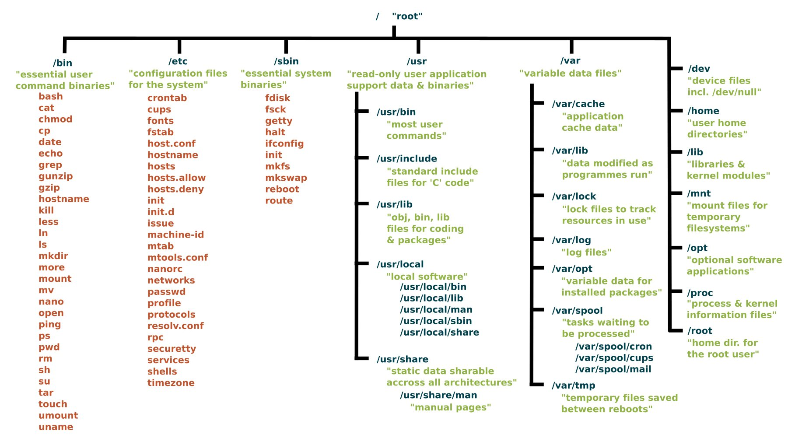

Основы Linux
Unix
Unix – семейство переносимых, многозадачных и многопользовательских операционных систем, которые основаны на идеях оригинального проекта AT&T Unix, разработанного в 1970-х годах в исследовательском центре Bell Labs Кеном Томпсоном и Деннисом Ритчи.

Основное отличие Unix-подобных систем от других операционных систем заключается в том, что это изначально многопользовательские многозадачные системы. В Unix может одновременно работать сразу много пользователей, каждый за своим терминалом, при этом каждый из них может выполнять множество различных вычислительных процессов, которые будут использовать ресурсы именно этого компьютера.
Второе колоссальное преимущество Unix — в её мультиплатформенность. Ядро системы разработано таким образом, что его легко можно приспособить практически под любой микропроцессор.
Unix имеет и другие характерные особенности:
использование простых текстовых файлов для настройки и управления системой;
широкое применение утилит, запускаемых из командной строки;
взаимодействие с пользователем посредством виртуального устройства — терминала;
представление физических и виртуальных устройств и некоторых средств межпроцессного взаимодействия в виде файлов;
использование конвейеров из нескольких программ, каждая из которых выполняет одну задачу.
Таким образом, за последние 50 лет Unix-архитектура затронула большую часть технологической индустрии, начиная с вычислительных кластеров, заканчивая macOS и Android (которые так же являются модифицированными версиями Unix). Неудивительно, что и биоинформатику Unix не обошел стороной. Благодаря удобству работы с файлами и создания конвейерных систем обработки данных, мультиплатформенности и многозадачности Unix-системы оказались идеальны для ее задач.
GNU / Linux
GNU (GNU’s Not Unix) – свободная Unix-подобная операционная система, разрабатываемая Проектом GNU. Акроним GNU был выбран из-за того, что GNU является Unix-подобной операционной системой, но отличается от Unix тем, что является свободным программным обеспечением и не содержит кода Unix.
GNU стала первой абсолютно бесплатной ОС. Все ее компоненты являлись открытыми и некоммерческими. Для их распостранения потребовалось написать универсальную лицензию, позволяющую делиться и распостранять бесплатный софт – GNU General Public Licence. С годами разработки и развития, GNU превратился в сообщество энтузиастов, не только работающих над бесплатной ОС, но и создавающий целый массив программных и системных решений.
В 1991 году Линус Торвальдс разработал ядро ОС - Linux Kernel, которое, вместе с разработанными утилитами и программами GNU основали семейство Unix-подобных систем – Linux

Linux-системы реализуются на модульных принципах, стандартах и соглашениях, заложенных в Unix в течение 1970-х и 1980-х годов. Такая система использует монолитное ядро, которое управляет процессами, сетевыми функциями, периферией и доступом к файловой системе. Драйверы устройств либо интегрированы непосредственно в ядро, либо добавлены в виде модулей, загружаемых во время работы системы.
Отдельные программы, взаимодействуя с ядром, обеспечивают функции системы более высокого уровня. Например, пользовательские компоненты GNU являются важной частью большинства Линукс-систем, включающей в себя наиболее распространённые реализации библиотеки языка Си, популярных оболочек операционной системы, и многих других общих инструментов Unix, которые выполняют многие основные задачи операционной системы.
Дистрибутивы Linux
Большинство пользователей для установки Linux используют дистрибутивы, включающие не только набор программ, но и решающие ряд задач по обслуживанию, объединённых едиными системами установки, управления и обновления пакетов, настройки и поддержки.
Самые распространённые в мире дистрибутивы (2017): Linux Mint, Ubuntu, Debian, Mageia, Fedora, OpenSUSE, ArchLinux, CentOS, PCLinuxOS, Slackware, Gentoo. Многие из дистрибутивов связаны друг с другом и в той или иной степени совместимы, в частности, Ubuntu основан на Debian, а дистрибутивы Mint основаны как на Ubuntu, так и Debian (LMDE) и полностью с ними совместимы, но при этом включают дополнительно поддержку по умолчанию Java, Adobe Flash и некоторых других проприетарных компонентов, а CentOS основан на исходных текстах коммерческого дистрибутива Red Hat Enterprise Linux (доступного в бинарной сборке только платным подписчикам) и при этом полностью бинарно совместимый с ним.
Самый популярный дистрибутив для использования на серверах, а, соответственно, и на биоинформатических кластерах – Debian.
Файловая система Linux

В Unix (и Linux в частности) каждый процесс и в целом, объект, является файлом (даже папка). В отличие от Windows, где дисковое пространство распределяется между разделами, в Linux файловая система представляет собой единое дерево, корневым объектом (папкой) которого является / , также называемый root (не путать с root user). На картинке сверху представлено дерево остальных системных папок Linux и их краткое описание. Обратите внимание, что все они исходят из root.
Пользователь может вносить изменения практически в любой файл системы, хотя это занятие является достаточно опасным и может сломать систему. Безопасной, и по-праву пользовательской папкой является /home и дочерние. В ней для каждого пользователя создается своя домашняя папка.
Терминал
Согласно Wikipedia: компьютерный терминал – устройство, используемое для взаимодействия пользователя (или оператора) с компьютером или компьютерной системой, локальной или удалённой. Однако слово терминал уже долгое время не используется в данном смысле. Терминалом гораздо чаще называют программу, предназначенную для эмуляции терминала - командную оболочку Unix (и не только).
Самой популярной командной оболочкой является Bash (Bourne again shell). Представляет собой командный процессор, работающий, как правило, в интерактивном режиме в текстовом окне. Bash также может читать команды из файла, который называется скриптом (или сценарием). Как и все Unix-оболочки, он поддерживает автодополнение имён файлов и каталогов, подстановку вывода результата команд, переменные, контроль над порядком выполнения, операторы ветвления и цикла.
При подключении к удаленному кластеру, скорее всего вас встретит именно командная строка bash, ожидающая от вас следующую команду. Далее, мы ознакомимся с основными командами bash.
Основные команды
Предисловие
Bash, хоть является популярной, но далеко не единственной командной оболочкой. Большинство команд будут выполнятся одинаково в любой из них, однако, могут быть и различия. Чтобы определить, какая командная оболочка используется в Вашем терминале, можно воспользоваться командой:
echo$0 или echo $SHELL
Команды в Linux CASE-SENSITIVE.
GNU/Linux и многие другие программы являются достаточно хорошо задокументированными проектами. Большинство программ имеют --help параметр, который выведет в терминал документацию. Также для программ GNU доступно руководство с помощью команды man <command-name> .
Попробуйте посмотреть документацию и руководство команды echo . (Чтобы выйти из режима руководства - нажмите qq)
Выполнение любой команды можно полностью остановить комбинацией клавиш Ctrl-CCtrl-C, а для того, чтобы приостановить – Ctrl-ZCtrl-Z
Взаимодействие с файловой системой
pwd(print working directory) - выводит на экран путь к текущей активной директории.ls(list) - показывает содержимое директории.du- выводит информацию об использовании диска файлами и рекурсивно для файлов директорий.cd– change directorytree- выводит структуру файлового древа директории.
Путь к файлу - его универсальный идентификатор в файловой системе. Путь может быть как абсолютным – исходящим из корневой папки, так и относительным – из текущей. Чтобы не приходилось постоянно вводить полный путь к файлу, для относительного пути были введены следующие сокращения:
.– текущая директория...– родительская директория.~– домашняя папка пользователя (/home/<username>)/- корневая папка файлового древа.
file- показать тип файла.head/tail- показать первую/последнюю строку файла.less– показать содержимое файла с возможностью скролла.strings– показать все ASCII строки из бинарного файла.cat– скопировать из stdin в stdout.tac-catнаоборот.mkdir- создать папку.
echo- вывести строку в stdout.<- перенаправить stdin.> / 1>– перенаправить stdout перезаписывая файл.>> / 1>>- перенаправить stdout добавляя строки к файлу.2>>– перенаправить stderr добавляя строки к файлу.|– создать pipe.
Linux pipelines

Pipeline в Linux перенаправляет вывод одной программы на вход другой.
Пример:
Выводим содержимое файла с помощью
catПередаем это утилите
grep(grep bmstu- оставить только строки, содержащиеbmstu)Далее передаем вывод утилите
sort(sort -u- отсортировать в алфавитном порядке и оставить только уникальные значения)
cat file.txt | grep bmstu | sort -uHelpful shortcuts
Стрелки вверх/вниз – выбрать предыдущую команду.
Ctrl-ACtrl-A – передвинуть курсор на начало команды.
Ctrl-ECtrl-E – передвинуть курсор на конец команды.
Ctrl-CCtrl-C – очистить командную строку.
TabTab – показать все возможные варианты продолжения команды.
Tab+TabTab+Tab – выбрать первый предложенный вариант продолжения.
A; B– выполнить A, затем B вне зависимости от успеха выполнения A.A && B– выполнить B только в случае успеха A.A || B– выполнить B только в случае ошибки/неуспеха A.
Общий вид команд
Все нижеперечисленные варианты равносильны:
| Команда | Параметры | Аргументы |
|---|---|---|
ls |
-l --all --human-readable |
./directory |
ls |
-l -a -h |
./directory |
ls |
-lah |
./directory |
Работа с процессами
Как закончить (kill) или приостановить процесс было сказано в разделе Предисловие.
bg N- запустить процесс N в фоне.fg N- вернуть процесс N на первый план../script.sh &- запустить скрипт в фоне.top- вывести список всех процессов (диспетчер задач).kill PID- закончить процесс по ID.kill -9 PID- немедленно прекратить (kill) процесс.
Работа с файлами
Reading and editing
cat- вывести содержимое файла в терминал.zcat– вывести содержимое сжатого файла в терминал.less -S- открыть файл для чтения; qq - выйти, // - поиск, gg - в начало, GG - в конец.nano- открыть файл в текстовом редакторе; Ctrl-XCtrl-X - выйти.
Downloading
wget- скачать по ссылке.
Работа с архивами
Одиночный файл:
Decompression:
gunzip -c file.gz > filegzip -cd file.gz > fileunzip -p file.zip > file
Compression
gzip -c file > file.gzzip -file file.zip
Множественные файлы:
Decompression
tar -xvzf files.tar.gz -C ./
Compression
tar -cvzf files.tar.gz ./*
sudo
sudo (англ. Substitute User and do, дословно «подменить пользователя и выполнить») — программа для системного администрирования UNIX-систем, позволяющая делегировать те или иные привилегированные ресурсы пользователям с ведением протокола работы. Основная идея — дать пользователям как можно меньше прав, при этом достаточных для решения поставленных задач. Программа поставляется для большинства UNIX и UNIX-подобных операционных систем.
Команда sudo предоставляет возможность пользователям выполнять команды от имени суперпользователя root, либо других пользователей. Правила, используемые sudo для принятия решения о предоставлении доступа, находятся в файле /etc/sudoers (для редактирования файла можно использовать специальный редактор visudo, запускаемый из командной строки без параметров, в том числе без указания пути к файлу).
В большинстве случаев грамотная настройка sudo делает небезопасную работу от имени суперпользователя ненужной. Все действия оказываются выполнимы из-под аккаунта пользователя, которому разрешено использовать sudo без ограничений. Имеется возможность запрещать и разрешать определённым пользователям или группам выполнение конкретного набора программ, а также разрешить выполнение определённых программ без необходимости ввода своего пароля.
apt
apt (advanced packaging tool) — программа для установки, обновления и удаления программных пакетов в операционных системах Debian и основанных на них (Ubuntu, Linux Mint и т. п.), иногда также используется в дистрибутивах, основанных на Mandrake, например Mandriva, ALT Linux и PCLinuxOS. Способна автоматически устанавливать и настраивать программы для UNIX-подобных операционных систем как из предварительно откомпилированных пакетов, так и из исходных кодов.
Пакеты берутся из интернет-репозиториев либо их можно установить с имеющихся носителей. Список источников пакетов хранится в файле /etc/apt/sources.list и в каталоге /etc/apt/sources.list.d/. Графические оболочки для apt позволяют легко добавлять новые и удалять ненужные источники.
apt (apt-get) значительно упрощает процесс установки программ в командном режиме.
apt update Обновление баз данных пакетов (указанных в/etc/apt/sources.list)
apt upgrade Обновление системы
apt search пакет Поиск пакетов
apt search ^пакет Поиск пакетов по регулярному выражению
apt show пакет Поиск пакетов и выводит информацию о пакете
apt install пакет Установить пакет
apt purge пакет Удалить пакет и его конфигурационные файлы. Возможно использовать для уже удаленного пакета.
apt remove пакет Удалить пакет
apt autoremove Удаление всех пакетов-сирот
apt autoclean Очистка кэша неустановленных пакетов
apt clean Очистка кэша пакетов
apt edit-sources Открывает файл /etc/apt/sources.list в текстовом редакторе для редактирования, после сохранения изменений и закрытия редактора, выполняет проверку файла на предмет ошибок. В случае наличия ошибок, выводит предложение на повторное редактирование файла, чтобы исправить ошибки.
apt full-upgrade Переход от одной основной версии дистрибутива к следующейУстановка Linux на VirtualBox
Этот раздел для тех, у кого Windows! Если у Вас macOS, то Вам и так доступен Unix терминал: Ctrl-PCtrl-P чтобы открыть поиск Spotlight -> Terminal.
VirtualBox (Oracle VM VirtualBox) — программный продукт виртуализации для операционных систем Windows, Linux, FreeBSD, macOS, Solaris/OpenSolaris, ReactOS, DOS и других.
Мы будем пользоваться VirtualBox, чтобы Вам не пришлось устанавливать Linux на свой ПК в качестве параллельной ОС, однако, скорее всего в будущем Вам придется это сделать. К счастью, у популярных дистрибутивов процесс установки максимально документирован и упрощен. Но будьте аккуратны с выделением разделов диска для системы, чтобы случайно не удалить все свои файлы :).
Образ Debian для VirtualBox доступен для скачивания по ссылке.